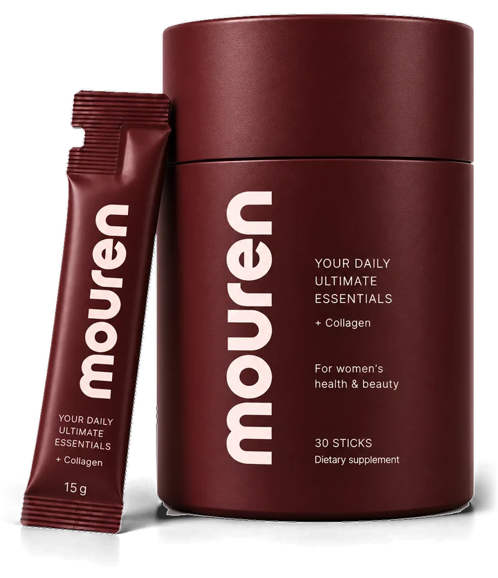

Ежедневный комплекс с коллагеном для женщин
Все витамины на день — в одном утреннем стике
Коллаген 2,5 г и ещё 30 веществ: 13 витаминов, 6 минералов, пребиотики, пробиотики, инозитол и теанин. Один стик утром вместо стопки баночек на полке.
- 30 стиков по 15 г
- Клубника–малина
- Без сахара и кофеина
БАД. Не является лекарственным средством.

Знакомо?
Узнаёте себя хотя бы в одной истории?
Шесть знакомых утр — и что для каждого есть в стике.
-
Энергия1 / 6
«Сплю восемь часов — и просыпаюсь уже уставшей»
Третий кофе к обеду, к вечеру сил хватает только на сериал. Анализы «в норме», а ощущение — будто батарейка на 10 %.
В стике
Железо в форме бисглицината — мягкой для желудка, метилкобаламин (B12), которому не нужна конвертация, и готовый фолат.
Железо 12 мг · B12 9 мкг · Фолат 400 мкг
-
Волосы и ногти2 / 6
«После душа — клок волос в сливе. Страшно расчёсываться»
Хвост стал тоньше вдвое, маникюр не держится, ногти слоятся. Маски и сыворотки за 3 000 ₽ — без толку.
В стике
Коллагену нужны партнёры: витамин C, цинк и медь. В одном стике есть все — и биотин в придачу.
Коллаген 2,5 г · Цинк 15 мг · Биотин 150 мкг
-
Цикл3 / 6
«За неделю до месячных срываюсь на мужа и детей, потом стыдно»
Слёзы на ровном месте, тянет на сладкое, отёки. Каждый месяц одно и то же — «ну, это же нормально».
В стике
Мио-инозитол 1 г, витамин B6 в активной форме P5P и магний — в одной порции. Если неделя перед циклом даётся тяжело, покажитесь гинекологу.
Мио-инозитол 1 г · B6 5,4 мг · Магний 300 мг
-
Живот4 / 6
«К вечеру живот как на пятом месяце, хотя ела салат»
Утром плоский, вечером не застегнуть джинсы. Платье на праздник выбираю по тому, как будет с животом.
В стике
Мягкие пищевые волокна PHGG и XOS, споровый пробиотик и постбиотик.
Волокна 5,65 г · 2 млрд КОЕ · 10 млрд клеток
-
Кожа5 / 6
«Смотрю в зеркало и вижу маму. Когда я успела?»
Кожа тусклая даже после отпуска, тональный ложится пятнами, у глаз — сухие морщинки, которых год назад не было.
В стике
Гиалуроновая кислота, астаксантин и экстракт виноградной косточки — вместе с коллагеном, витамином C, цинком и медью.
Гиалуроновая кислота 120 мг · Астаксантин 4 мг · OPC 95 мг
-
Нервы и сон6 / 6
«В два ночи лежу и прокручиваю, что не успела»
Работа, дети, родители, кружки, ипотека — в голове сорок открытых вкладок. Засыпаю с телефоном, просыпаюсь раньше будильника.
В стике
L-теанин 200 мг и магний 300 мг. Кофеина нет, поэтому утренний стик не мешает вечернему сну.
L-теанин 200 мг · Магний 300 мг · Без кофеина
Почему не 22 добавки
1 стик вместо 22 добавок
31 вещество в тех же формах и дозах. По отдельности это минимум 22 баночки на полке и горсть капсул каждое утро.
| Показатель | По отдельности | mouren |
|---|---|---|
| Добавок на полке | 22 | 1 |
| Рублей в месяц | от 15 450 | 6 675 |
| Заказов в месяц | до 22 | 1 |
И 22 баночки не нужно помнить, сверять между собой и допивать до срока годности. Одно движение утром вместо целой системы.
- Коллаген морской 1 уп.2 850 ₽
- Магний цитрат 1 уп.1 125 ₽
- Железо бисглицинат 1 уп.975 ₽
- Мио-инозитол 1 уп.1 350 ₽
- Пребиотики PHGG + XOS 2 уп.2 100 ₽
- Пробиотик + постбиотик 2 уп.1 950 ₽
- Гиалуроновая кислота + астаксантин 2 уп.2 400 ₽
- B-комплекс в активных формах + D3/K2 2 уп.1 650 ₽
- L-теанин 1 уп.1 050 ₽
- C, E, β-каротин, цинк + медь, йод, селен, β-глюкан, OPC, имбирь ещё 9 уп.не в сумме
По отдельностиот 15 450 ₽
mouren, 30 стиков6 675 ₽
Ориентир: средние цены маркетплейсов на аналогичные дозы и формы, сентябрь 2026. Цена mouren — по подписке на 30 дней.
Ритуал
Вода, стик, 20 секунд
До первой чашки кофе. На вкус — ягодный лимонад без сахара.
-
Стакан холодной воды, 200–250 мл
Пока закипает чайник. Вода холодная, чтобы пробиотики и витамин C остались целыми.
-
Высыпать стик и 20 секунд размешать
Порошок растворяется без комков. Цвет дают свёкла и чёрная морковь, вкус — клубника и малина.
-
Выпить за завтраком
Витамины D3, E, K2 и каротиноиды жирорастворимые: с едой они усваиваются полнее. Дальше день ваш.
- Без сахараСтевия и эритрит
- Без синтетических красителейЧёрная морковь и свёкла
- Без кофеинаНе мешает вечернему сну
- Без «комплексов»Каждая доза названа
Состав по задачам
Десять направлений в одной дозе
Выберите, что важно вам, — покажем вещества и дозы.
Направление 1 из 10
Энергия
Усталость часто связана не со сном, а с нехваткой железа и витамина B12. Железо в форме бисглицината мягко для желудка, метилкобаламин не нужно конвертировать, а B1 и B3 участвуют в выработке энергии.
Почему вместе: B12 и фолат работают в одном цикле — нехватка одного маскирует нехватку другого.
- Железо, бисглицинат12 мг
- B12, метилкобаламин9 мкг
- Фолат, 5-MTHF400 мкг
- Витамин B14,6 мг
- Витамин B330 мг
Направление 2 из 10
Кожа, волосы, ногти
Коллаген без витамина C, цинка и меди — просто белок. Здесь все четыре в одной порции, а ещё гиалуроновая кислота и биотин.
Почему вместе: медь и витамин C нужны ферменту лизилоксидазе — без них собственный коллаген не «сшивается».
- Коллаген, пептиды2 500 мг
- Гиалуроновая кислота120 мг
- Биотин150 мкг
- Цинк, бисглицинат15 мг
- Витамин C200 мг
- Медь1,5 мг
Направление 3 из 10
Цикл и гормоны
Мио-инозитол в дозе 1 г, витамин B6 в активной форме P5P и 300 мг магния — три вещества, которые чаще всего обсуждают в связи с ПМС. Йод и селен — пара для щитовидной железы.
Почему вместе: селен нужен ферментам, которые работают с гормонами щитовидной железы, поэтому йод и селен лучше получать вместе.
- Мио-инозитол1 000 мг
- B6, P5P5,4 мг
- Магний, цитрат300 мг
- Йод150 мкг
- Селен55 мкг
Направление 4 из 10
Пищеварение
5,65 г пребиотических волокон, споровый пробиотик, который доходит до кишечника, и постбиотик, которому вообще не нужно выживать. Плюс экстракт имбиря.
Почему вместе: XOS — быстрая еда для бифидобактерий, PHGG — мягкое волокно, которое обычно не вызывает вздутия.
- PHGG3 750 мг
- XOS1 900 мг
- B. coagulans GBI-302 млрд КОЕ
- L. gasseri CP230510 млрд клеток
- Имбирь, гингеролы10 мг
Направление 5 из 10
Иммунитет
Четыре вещества, которые обычно покупают по отдельности в сезон простуд, и β-глюкан из дрожжей.
Почему вместе: цинка и витамина D горожанам чаще всего не хватает именно зимой.
- Витамин C200 мг
- Витамин D3600 МЕ
- Цинк15 мг
- Селен55 мкг
- β-глюкан 1,3/1,6255 мг
Направление 6 из 10
Нервная система и сон
L-теанин — для спокойствия без сонливости, магний — для расслабления мышц. Кофеина нет, поэтому утренний стик не мешает вечернему сну.
Почему вместе: B6 нужен для синтеза серотонина и ГАМК, магний — для работы их рецепторов.
- L-теанин200 мг
- Магний, цитрат300 мг
- B6, P5P5,4 мг
- B5, пантотенат14,7 мг
- B129 мкг
Направление 7 из 10
Кости и суставы
Витамин K2 в форме MK-7 помогает направлять кальций в кости. Он работает в паре с D3 — здесь они вместе. Коллаген — основа хряща.
Почему вместе: D3 помогает усваивать кальций, а K2 участвует в том, куда он пойдёт.
- Витамин D3600 МЕ
- Витамин K2, MK-790 мкг
- Магний300 мг
- Коллаген2 500 мг
- Медь1,5 мг
Направление 8 из 10
Сердце и сосуды
Проантоцианидины виноградной косточки и астаксантин — антиоксиданты для сосудов. Магний поддерживает работу сердечной мышцы, витамины K2 и E дополняют набор.
Почему вместе: астаксантин и витамин E защищают липиды от окисления с разных сторон клеточной мембраны.
- OPC винограда95 мг
- Астаксантин4 мг
- Магний300 мг
- Витамин K2, MK-790 мкг
- Витамин E30 мг
Направление 9 из 10
Антиоксидантная защита
Городской воздух, экраны, стресс. Пять антиоксидантов разной природы — каротиноиды, токоферол, витамин C и селен — работают в разных тканях.
Почему вместе: витамин C восстанавливает окисленный витамин E, поэтому вместе они работают дольше.
- Астаксантин4 мг
- β-каротин4,8 мг
- Витамин E30 мг
- Витамин C200 мг
- Селен55 мкг
Направление 10 из 10
Либидо
Желание чаще пропадает от усталости, стресса и нехватки железа, чем от гормонов. Цинк участвует в синтезе половых гормонов, экстракт виноградной косточки и B3 — в работе сосудов, теанин снимает фоновое напряжение.
Почему вместе: без энергии и спокойствия гормональная часть не срабатывает, поэтому здесь три опоры, а не одна.
- Цинк, бисглицинат15 мг
- Железо, бисглицинат12 мг
- L-теанин200 мг
- OPC винограда95 мг
- Витамин B330 мг
- Магний300 мг
Состав
31 вещество: доза, форма и зачем
Каждая доза названа и не выше верхнего допустимого уровня. Мы платим за форму, а не за строку в составе: P5P вместо пиридоксина, бисглицинаты вместо оксидов.
- 12,8 г
- активных веществ в стике 15 г
- 31
- вещество в одной порции
- 0
- доз выше верхнего допустимого уровня
Коллаген1 позиция · рыбный гидролизат
Витамины13 позиций · активные формы
Минералы6 позиций · 3 бисглицината
Пребиотики и пробиотики4 позиции · 5,65 г волокон
Функциональные нутриенты5 позиций
Растительные экстракты2 позиции
% — от адекватного уровня суточного потребления для взрослых, ВДУ — верхний допустимый уровень. Вспомогательные вещества (2,2 г): стевия, эритрит, пищевые кислоты, красители из чёрной моркови и свёклы. Окончательный состав и пищевая ценность указаны на упаковке.
Курс на 30 дней
Ваши тридцать утр
В тубе 30 стиков — ровно месяц, если брать по одному каждое утро. Укажите дату первого стика: разложим курс по календарю и подскажем, когда сдать анализы и когда решить, продолжать ли.
Уже начали? Укажите дату первого стика — посчитаем, сколько утр осталось.
- Первый стик
- —
- Последний стик
- —
- Напомним о продлении
- —
- Анализы «после»
- —
Ферритин, витамин D и B12 — сдайте до первого стика и через 12 недель, чтобы видеть свои показатели в цифрах. Чек-лист анализов входит в каждый заказ.
Честно
Чего mouren не сделает
Не вылечит анемию
12 мг железа — поддерживающая доза. Подтверждённый дефицит лечат препаратами по назначению врача.
Не заменит косметолога
Коллаген внутрь не разгладит глубокие морщины — это работа для специалиста.
Не поможет похудеть
Стик не сжигает жир. Вес уходит от дефицита калорий, а не от витаминов.
Когда сначала к врачу
Если что-то из списка про вас — сначала врач, потом мы.
- K2 · 90 мкг
- Приём варфарина и других антикоагулянтов — только после согласования с врачом.
- Йод · 150 мкг
- Заболевания щитовидной железы, тиреостатики или левотироксин.
- Железо · 12 мг
- Гемохроматоз, талассемия, высокий ферритин.
- Беременность
- При беременности и кормлении дозировки нужно согласовать с врачом.
- Лекарства
- L-тироксин — с интервалом 4 часа. Другие постоянные препараты обсудите с врачом.
- До 18 лет
- Не предназначен для детей и подростков.
Тариф и гарантия
Начните с 30 дней
Гарантия
Не почувствуете разницу за 30 дней — вернём 100 % суммы. Упаковку возвращать не нужно.
- 30 дней
- на возврат, на подписке 3 месяца — 90
- 100 %
- суммы, без объяснения причин
- 0 ₽
- доставка по России
- 1 нажатие
- чтобы отменить подписку или поставить на паузу
Вопросы
Перед тем как оформить
Не нашли ответ? Напишите нам:
Почему порошок, а не капсулы?
В стике 12,8 г активных веществ — это около 25 капсул. В порошке всё помещается в одну порцию, а пробиотики и клетчатка в нём стабильнее.
Можно пить постоянно?
Да, дозировки рассчитаны на ежедневный приём без перерывов. Раз в полгода имеет смысл сдавать ферритин, витамин D и B12, чтобы видеть свои показатели в цифрах.
Сочетается с другими добавками?
Если вы отдельно принимаете магний, железо или D3, их можно убрать — они уже есть в стике. Омегу-3 оставьте: её в составе нет.
Какой вкус?
Клубника и малина, без сахара: подслащено стевией и эритритом. Цвет дают чёрная морковь и свёкла. Разводите в 200–250 мл холодной воды.
А если вкус не понравится?
Если слишком сладко, разведите стик в 300 мл воды. Не подошло совсем — вернём деньги в течение 30 дней.
Как работает возврат?
Если за 30 дней не почувствуете разницы, пришлите номер заказа — вернём 100 % суммы тем же способом, которым вы платили. Упаковку присылать не нужно. На подписке на 3 месяца окно возврата — 90 дней.
Можно при беременности и кормлении?
Дозировки рассчитаны на взрослых небеременных женщин. При беременности и кормлении — только после согласования с врачом.
Можно вместе с оральными контрацептивами?
Противопоказаний к совместному приёму в составе нет. Известно, что КОК могут снижать уровень B6, B12, фолата и магния, — все они есть в стике. Приём лучше обсудить с гинекологом.
Я принимаю L-тироксин или варфарин
L-тироксин: пейте стик не раньше чем через 4 часа после таблетки — железо, магний и цинк мешают его усвоению. Приём йода согласуйте с эндокринологом. Варфарин: в составе есть витамин K2, поэтому только после согласования с врачом.
Чем отличается от аптечных мультивитаминов?
Формами и дозами: бисглицинаты вместо оксидов, P5P, метилфолат, метилкобаламин, K2 в форме MK-7. Плюс коллаген, пробиотики, инозитол и теанин, которых в обычных мультивитаминах нет.
Почему столько стоит?
Те же вещества по отдельности — это 22 добавки и от 15 450 ₽ в месяц. В mouren — 6 675 ₽ по подписке, или 222 ₽ в день.
Когда списание и как отменить подписку?
Деньги списываются в день отправки следующей тубы, напомним за 3 дня. Отменить подписку или поставить её на паузу можно в личном кабинете в одно нажатие.